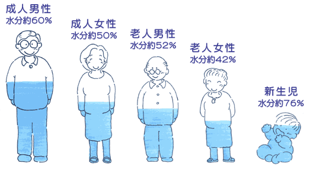

シリーズ：水分
公開日：2026年7月｜最終更新：2026年7月
第1章 高齢者は脱水になりやすい
高齢者は若い人と比べて、体内の水分量が少なくなっています。
一般に成人では体重の約60％が水分ですが、高齢者では50％前後まで低下します。
- 筋肉量の減少（筋肉は水分を多く含む）
- 腎機能の低下（尿の調整能力が低下）
- 発汗機能の低下
その結果、わずかな水分不足でも脱水になりやすい状態です。

第2章 のどの渇きの低下
高齢者では、「のどが渇いた」という感覚が鈍くなります。
そのため、喉が渇いていなくても水分不足になることがあります。
(注意）
「喉が渇く前に飲む」ことが重要です。
第3章 水分必要量
一般的な目安：体重 × 30～35mL／日
例）体重50kg → 約1500mL
この中には以下が含まれます：
注意）
高齢者では1日1000～1500mL程度の飲水を目標にするのが現実的です。
ポイント
- 一度に飲まず、こまめに分ける
- 起床時・入浴前後・就寝前に習慣化
第4章 夜間頻尿と水分制限の誤解
「夜トイレが近くなるから水を飲まない」という考えは注意が必要です。
夜間頻尿の原因は、次のようであり、水分だけではありません
ポイント
夕方以降は控えめにしつつ、日中にしっかり水分を摂ることが大切です。
第5章 脱水と認知機能
軽度の脱水でも、脳の働きに影響がでて、次のような症状が見られます。
- 集中力の低下
- 判断力の低下
- ぼんやりする
- せん妄（急な混乱状態）
ポイント
認知症の悪化と間違われることもあります。
水分補給で改善するケースもあります。
第6章 脱水症と熱中症の関係
脱水は熱中症の大きな原因です。
体内の水分が不足すると、
その結果、体温が上昇しやすくなります。
高齢者では：
があり、重症化しやすくなります。
注意
室内でも熱中症は起こるため注意が必要です。
コラム① 脱水のサインを見逃さない
主なチェックポイント：
- 尿の色が濃い
- 尿の回数が少ない
- 口や唇が乾く
- 皮膚のハリがない
- 元気がない・ぼんやりする
ポイント
朝一番の尿は重要な目安（薄いレモン色が理想）
第7章 まとめ
- 喉が渇く前に飲む
- こまめに分けて飲む
- 1日1000～1500mLを目安にする
- 過度な水分制限をしない
- 暑い時期は特に意識する
👉 水分は「意識して摂る」ことが健康維持の鍵です。
おまけ（いくつかのポイント）
コラム② 水・お茶・スポーツドリンクの使い分け
普段は水・お茶で十分
緑茶：カフェインあり／麦茶：カフェインなし
スポーツドリンクが必要な場面
糖分が多いため日常的な飲みすぎに注意
コラム③ 入浴前後の水分補給
入浴では約500mLの水分が失われることがあります。
脱水予防に非常に重要です。
参考文献
- 厚生労働省：健康づくりのための水分摂取に関する資料
- 日本老年医学会：高齢者の脱水と水分管理
- 環境省：熱中症予防情報サイト
- 日本栄養士会：水分補給に関するガイドライン
※本ページは公的機関および学会の情報をもとに作成しています。